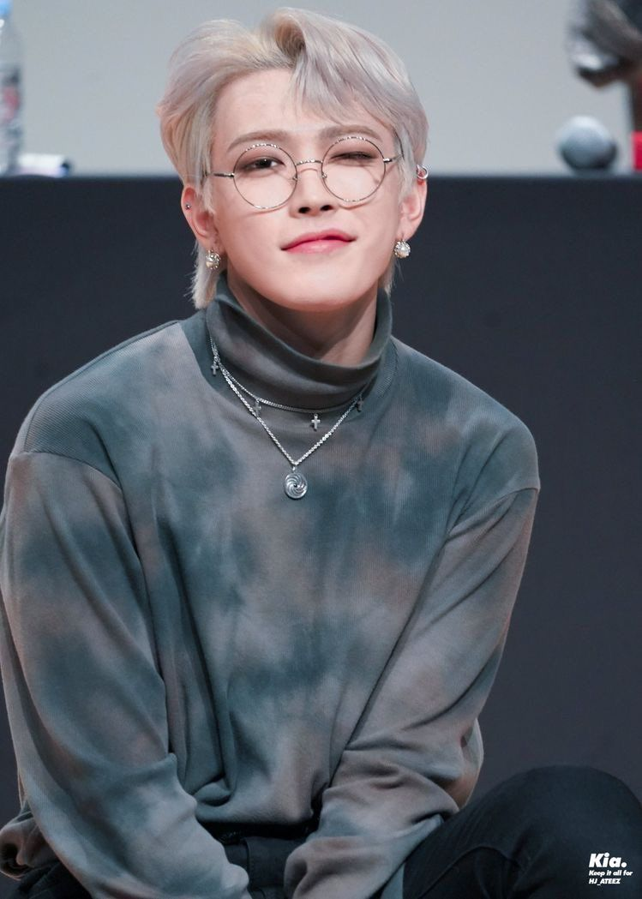

Disse que "Hong" significa "vasto" e "Joong" significa "meio/centro" simbolizando que "ele será o centro desse vasto mundo". Ele queria se tornar um ídolo porque gosta de expressar energia e influenciar os outros, e isso é algo que somente a geração de hoje pode dar.